中学理科 生物分野（人体） 図で確認・ミニテストで実力チェック
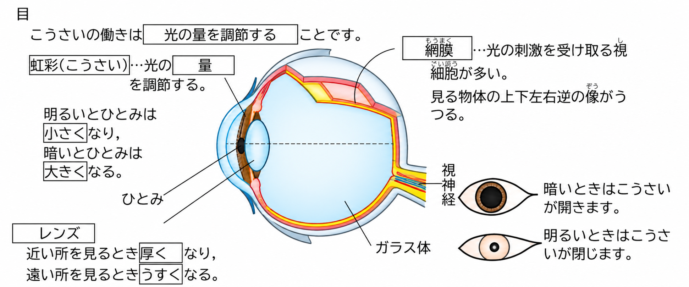
目・耳・鼻・舌・皮ふのように、外からの刺激を受けとる器官を感覚器官といいます。感覚器官には、刺激を受けとる感覚細胞があります。
目に入った光は、こうさい（虹彩）の中央にあるひとみを通り、レンズ（水晶体）で曲げられて、網膜に像を結びます。網膜には光の刺激を受けとる細胞があり、その刺激は視神経を通って脳へ送られます。
| 部分 | はたらき |
|---|---|
| こうさい（虹彩） | ひとみの大きさを変えて、目に入る光の量を調節する。 明るいとき → ひとみは小さくなる／暗いとき → ひとみは大きくなる |
| レンズ（水晶体） | 厚さを変えてピントを合わせる。 近くを見るとき → 厚くなる／遠くを見るとき → うすくなる |
| 網膜 | 光の刺激を受けとる細胞がある。像は上下左右が逆にうつる |
| ガラス体 | 目の中を満たす透明な部分。目の形を保つ |
| 視神経 | 網膜で受けとった刺激を脳へ伝える |
網膜にうつる像は上下左右が逆ですが、脳でもとの向きとして感じとっています。カメラにたとえると、フィルム（センサー）は網膜、しぼりはこうさいにあたります。
光は①の中央のひとみから入り、②で曲げられて③に像を結ぶ。③で受けとった刺激は④を通って脳へ送られる。明るいところでは、ひとみは⑤なる。
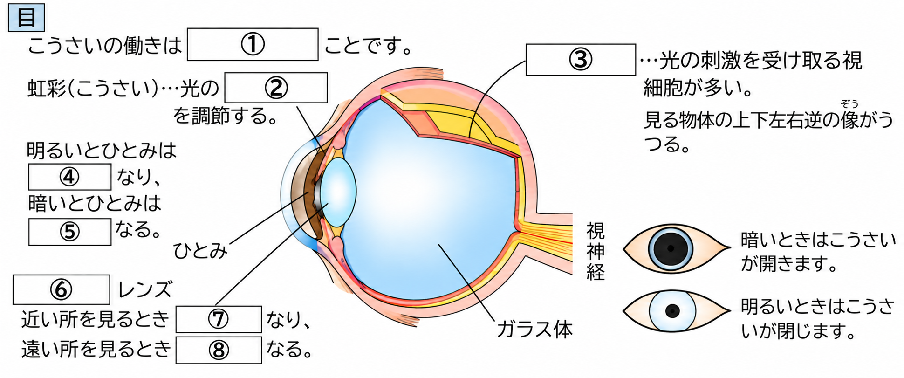
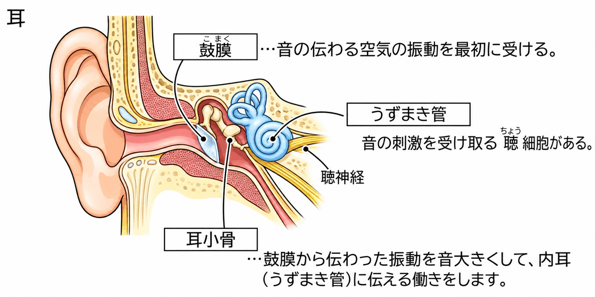
音は、空気の振動として耳に伝わります。
耳に入った音は、まず鼓膜をふるわせます。その振動は耳小骨で大きくされて、うずまき管に伝わります。うずまき管の中は液体で満たされていて、音の刺激を受けとる細胞があります。その刺激は聴神経を通って脳へ送られます。
| 部分 | はたらき |
|---|---|
| 鼓膜 | 音（空気の振動）を最初に受けとって振動する |
| 耳小骨 | 鼓膜の振動を大きくして、うずまき管に伝える |
| うずまき管 | 中が液体で満たされ、音の刺激を受けとる細胞がある |
| 聴神経 | うずまき管で受けとった刺激を脳へ伝える |
耳は顔の左右に1つずつあるので、音の来る方向を知ることができます。
音は①の振動として耳に伝わり、まず②をふるわせる。その振動は③で大きくされ、④に伝わる。④で受けとった刺激は⑤を通って脳へ送られる。
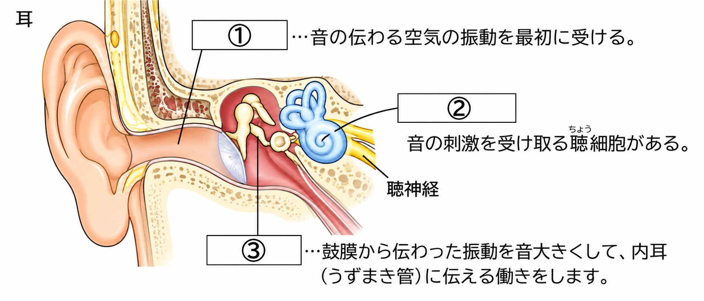
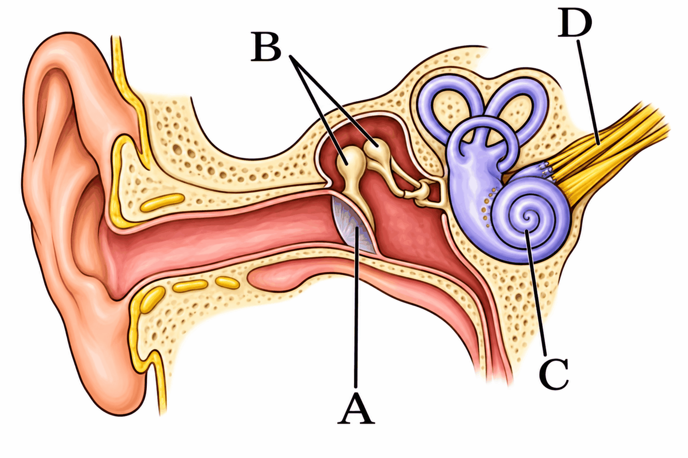
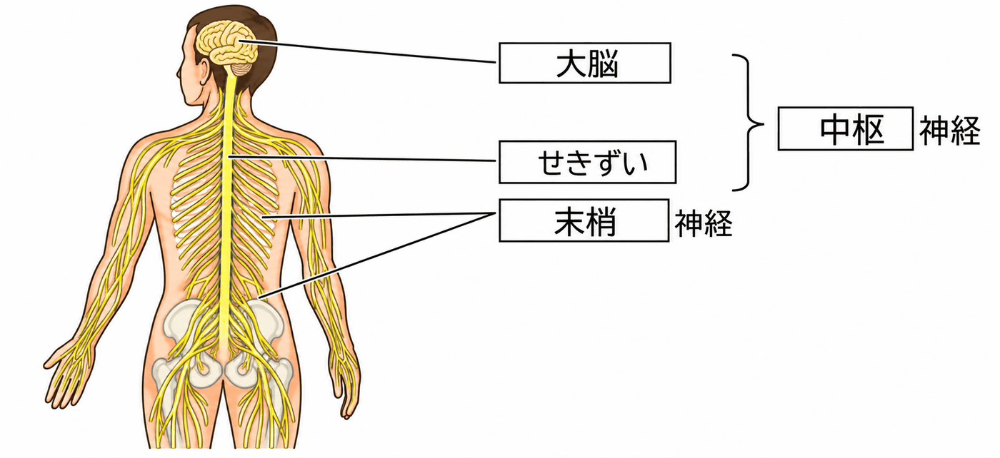
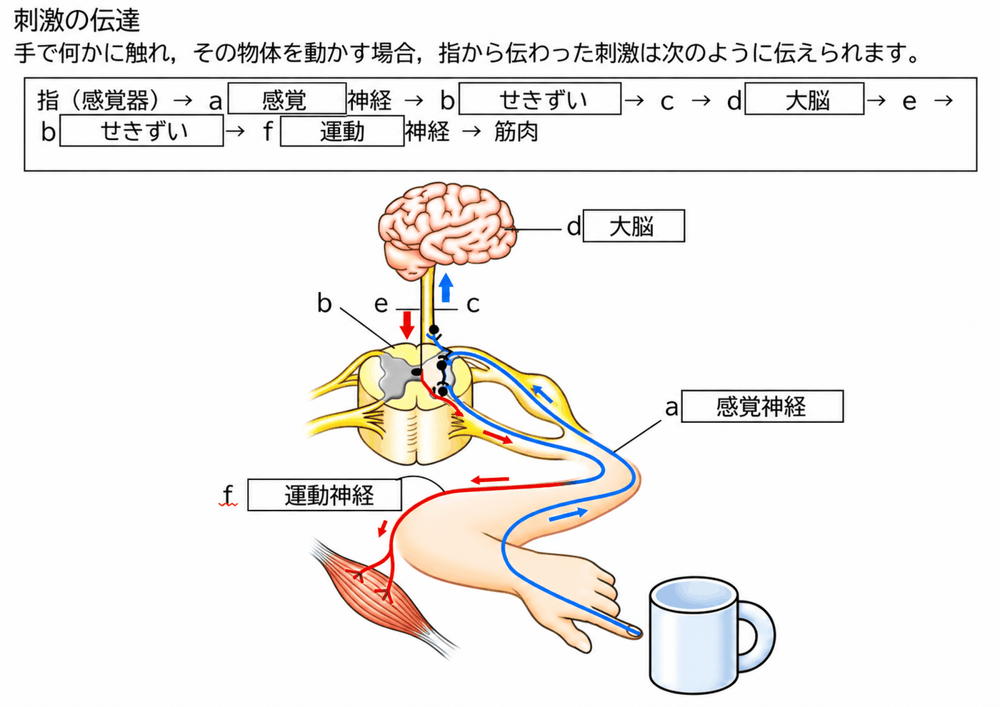
感覚器官で受けとった刺激は、信号となって神経を通り、脳やせきずいへ伝わります。そこで判断が行われ、命令の信号が筋肉へ送られて、体が動きます。
| 神経の種類 | ふくまれるもの・はたらき |
|---|---|
| 中枢神経 | 脳とせきずい。判断をしたり、命令を出したりする |
| 末梢（まっしょう）神経 | 中枢神経から枝分かれして全身に広がる神経。感覚神経と運動神経がある |
| 感覚神経 | 感覚器官で受けとった刺激の信号を、中枢神経へ伝える |
| 運動神経 | 中枢神経からの命令の信号を、筋肉へ伝える |
中枢神経と末梢神経をまとめて神経系といいます。
図のcは、せきずいから大脳へ信号が上っていく道すじ、eは大脳からせきずいへ命令が下りてくる道すじです。
目・耳・鼻・舌のように脳に近い感覚器官からの信号は、せきずいを通らずに直接脳へ伝わります。
神経系のうち、脳とせきずいを①神経、そこから枝分かれして全身に広がる神経を②神経という。②神経のうち、感覚器官からの信号を中枢へ伝えるのは③神経、中枢からの命令を筋肉へ伝えるのは④神経である。
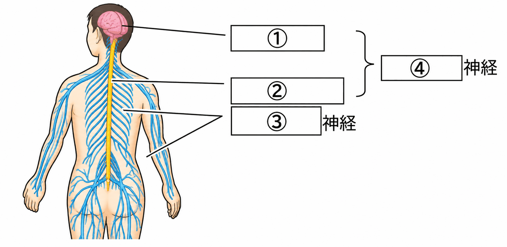
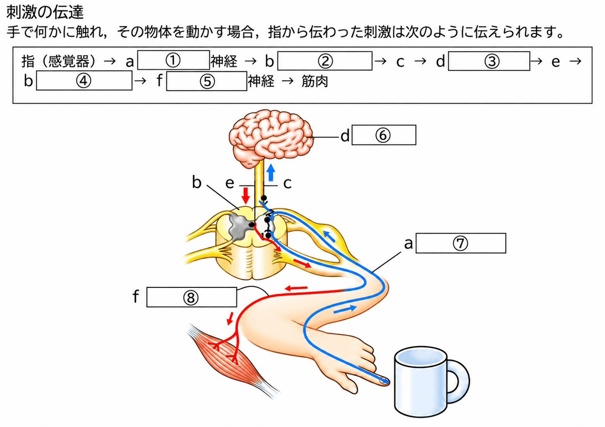
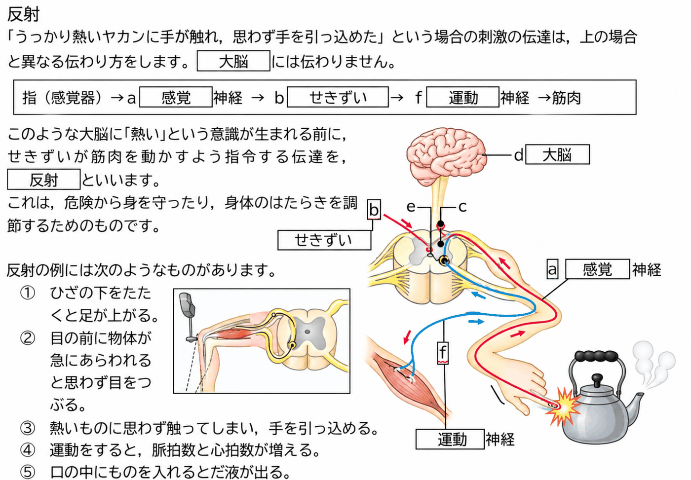
熱いやかんにうっかり手がふれたとき、「熱い」と感じる前に思わず手を引っこめます。このように、刺激に対して無意識に起こる反応を反射といいます。
反射では、命令が脳ではなく、せきずいなどから直接出されます。信号が脳まで行かないので、刺激を受けてから反応するまでの時間が短くなります。「熱い」と感じるのは、信号が脳に届いたあと（手を引っこめたあと）です。
反射は、危険から体を守ったり、体のはたらきを調節したりするのに役立っています。
・ひざの下を軽くたたくと、足がはね上がる
・目の前に急に物が飛んでくると、思わず目を閉じる
・熱いものにふれると、思わず手を引っこめる
・明るいところに出ると、ひとみが小さくなる
・運動をすると、脈拍数や心拍数が増える
・口の中に食べ物を入れると、だ液が出る
刺激に対して無意識に起こる反応を①という。①では、命令が②から出されるので、信号が③を通らず、反応するまでの時間が④。①は、⑤から体を守るのに役立っている。
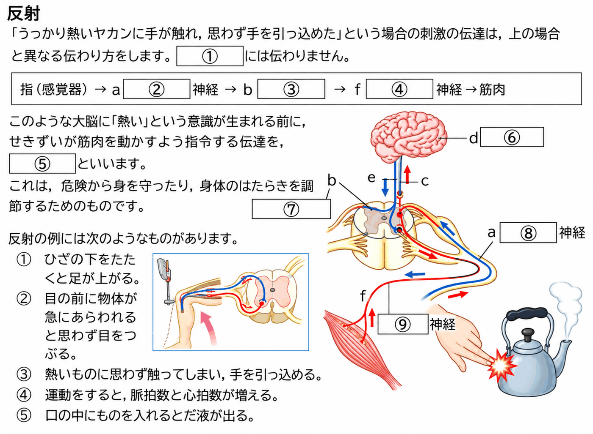
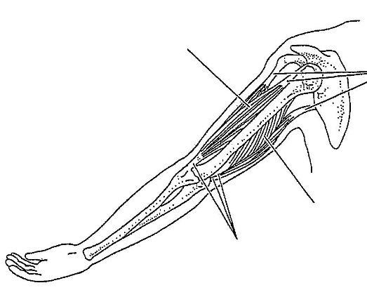
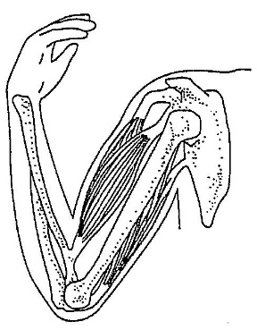
ヒトは、体を支えたり動かしたりする骨格と、筋肉のはたらきによって、姿勢を保ったり運動したりしています。
| 部分 | 説明 |
|---|---|
| 関節 | 骨と骨のつなぎ目。ここで体が曲がる |
| けん | 筋肉の両はしにあり、筋肉と骨をつなぐじょうぶな部分 |
筋肉は自分で縮むことはできますが、自分でのびることはできません。そのため、関節をまたいで2つの骨についた筋肉が対になってはたらきます。
| 内側の筋肉 | 外側の筋肉 | |
|---|---|---|
| 腕を曲げるとき | 縮む | ゆるむ |
| 腕をのばすとき | ゆるむ | 縮む |
骨と骨のつなぎ目を①、筋肉の両はしにあって筋肉と骨をつなぐ部分を②という。腕を曲げるとき、内側の筋肉は③、外側の筋肉は④。
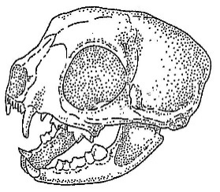
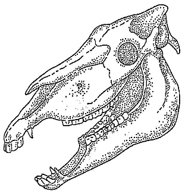
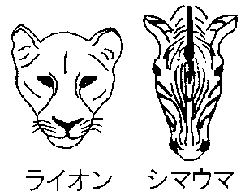
動物の歯や目のつき方は、食べ物や生活のしかたに合ったつくりになっています。
| 肉食動物（ライオンなど） | 草食動物（シマウマ・ウマなど） | |
|---|---|---|
| 歯 | 犬歯が大きくするどい（えものをとらえ、肉を切りさく） | 草をかみ切る門歯と、すりつぶす臼歯が発達 |
| 目のつき方 | 前向き。両目で見える範囲が広く、えものまでの距離をつかみやすい | 横向き。見える範囲（視野）が広く、敵を早く見つけやすい |
肉食動物は、えものをとらえて肉を切りさく①が発達し、草食動物は、草をかみ切る②と、すりつぶす③が発達している。また、肉食動物の目は④向きに、草食動物の目は⑤向きについている。
「目のつくり」「耳のつくり」について、入試問題で確認しましょう。
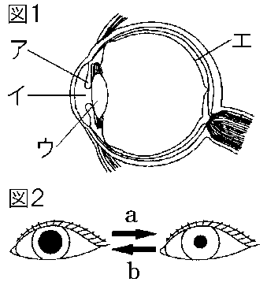
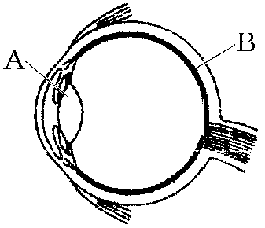
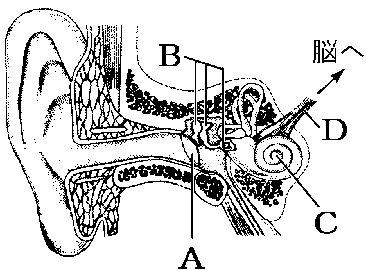
音が耳に届くと、図Aの①が振動する。この振動はBの耳小骨で増幅されて、Cの②に伝えられる。②の中にはリンパとよばれる液体が入っていて、音の刺激を受けとる感覚細胞が、この液体のゆれを音の刺激として受けとり、Dの聴神経（感覚神経）を通して信号を脳へ伝える。
「刺激の伝達」「反射」について、入試問題で確認しましょう。
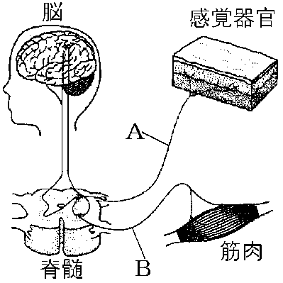
神経系は、①脳やせきずいをふくむ中心の部分と、②そこから枝分かれして体のすみずみへいきわたっている部分からできている。図のAの神経とBの神経は、それぞれ何というか。
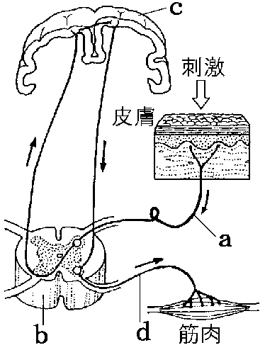
a：受けとった刺激の信号が伝わる神経 b：図のbの部分 c：刺激の信号を受けとり、どのように反応するかを命令する器官 d：cからの命令をc→b→dと送る神経
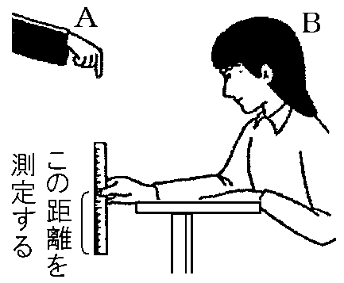
（ものさしが落ちる距離と時間：5cm…0.10秒、10cm…0.14秒、15cm…0.17秒、20cm…0.20秒、25cm…0.23秒、30cm…0.25秒）
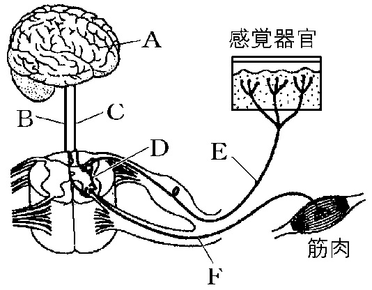
①プールの水に手を入れ、冷たさを確認したあと、水の中から手を出した。
②熱いやかんに手がふれたとき、熱いと感じる前に手を引っこめた。
ア 信号が青に変わったのを見て歩き始めた。
イ 暗いところから明るいところに出ると、ひとみが小さくなった。
ウ 目の前にボールが飛んできたので、思わず目を閉じた。
エ 投げられたボールの方向を見て走り出した。